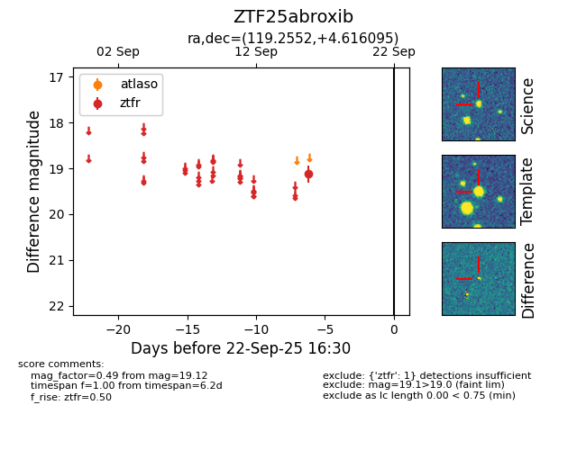

FINK: ZTF25abroxib
Lasair: ZTF25abroxib
ALeRCE: ZTF25abroxib
ZTF25abroxib (ztf,fink)
equatorial (ra, dec) = (119.2552,+4.61609)
galactic (l, b) = (216.3234,+16.68433)

last ztfr=19.12
1 ztfr detections